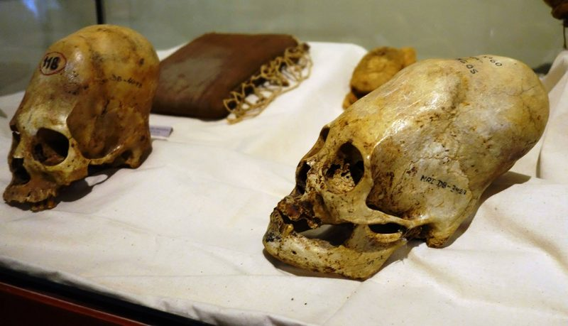
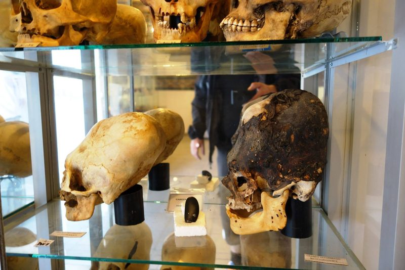

Vad berättar skallarna?

På skallens sida syns MRI DB skrivet med bläck. Kan några bokstäver berätta var skallen kommer ifrån och var dess uppgifter finns? Den här sidan följer ledtråden så långt de öppnade källorna räcker.

Hur materialet kom till
”Jag har rest runt hela jordklotet, och här håller jag Starchild 2-skallen i mina händer.”
- Peru den 1 november 2014. Jani fotograferade långa skallar i peruanska museer och i en privat samling. Bilderna 01 och 03–11 är fotografier från detta besök; i bild 03 och 04 håller Jani själv skallen. I Travel South-videorna berättar samlingens ägare om sina skallar, Starchild 2 presenteras vid namn och i ett museums bakre rum fick man särskilt tillstånd att filma. Bild 02 är ett sammandrag av dessa videor.
- Kairo den 15 februari 2024. På Egyptiska museet dök det upp stenhuvuden vars hjässa på samma sätt sträcker sig långt bakåt.
- Arkivet 2026. Bilderna, videorna och öppna källor gicks igenom: museiguider, föremålskort och studier.
Tre frågor
- Vart leder koden på skallen? MRI DB skrivet med bläck och museets föremålskort.
- Varför kallas den här Starchild 2? Namnet är lånat från en mer berömd skalle från Mexiko.
- Varför återkommer det långa huvudet i Kairos stenbilder? Amarnakonsten och de peruanska skallarna sida vid sida.
På vägen: montern med tre huvuden med bevarat hår, samlingsägarens berättelse och vad studierna säger. Alla elva foton med iakttagelser finns i bildregistret i slutet.
Skallarna på bilderna är mänskliga kvarlevor. Sidan berättar bara vad som syns på fotografierna och i utställningstexterna och vad publicerad forskning säger. Ett fotografi kan inte avslöja den dödes ålder, sjukdomar eller ursprung.
Bilderna 01 och 03–11 är Jani Korpis fotografier från Peru 2014, från samma besök som museivideorna som filmades den 1 november 2014. Bild 02 är ett sammandrag av dessa videor. Årtalet bygger på videornas ursprungliga filnamn (20141101…): uppställningarna i bild 01 och 08 syns likadana i videorna _IlZYy2Mbpk och qlPq2wTEFEc, och Travel Souths Peruvideor från 2011 innehåller inga skall- eller museibilder. Vänster och höger avser betraktarens vänster och höger. Samma föremål kan synas på flera bilder.
Så läser du märkningarna
- T
- Forskningsresultat
- A
- Krönikeberättelse eller annat dokument
- L
- Legend eller berättelse
- S
- Spekulation
Se hur en påhittad gestalt växte fram ur en skalles formStenstadens ansikten: 13 bildpar. AI-illustration, fiktion, inte forskningsfakta.
Ett gammalt fotografi, en ny spårningsfråga: vart leder MRI DB?


- Vad bilden visar. På sidan av den högra skallen står MRI DB och en sifferserie handskrivet. Siffran ser möjligen ut som 3421, men slutet är osäkert, så läsningen lämnas öppen.
- Jämförelse med museimaterial. A På sidan 25 i García Sotos rapport från 2018 finns ett föremålskort från regionmuseet i Ica. Under ”Otros códigos e inscripciones” står MRI-DB-3869. Skallen på kortet finns på Museo Regional de Ica ”Adolfo Bermúdez Jenkins”, som fyndplats anges Hacienda Chongos och som annan kod MRI-01050-12 [2].
- Resultat. Kodens format fick en motsvarighet: samma MRI-DB-början används på Icamuseets föremålskort. En träff på individnivå är öppen. Siffrorna stämmer inte, och början ensam identifierar varken skallen Jani fotograferade eller kopplar den till rapportens DNA-resultat.
- Nästa fråga. Att bekräfta hela numret från en skarpare bild och få motsvarande katalogkort från museet.
Tre platser hålls isär. Rapportens skallar och föremålsuppgifter kommer från regionmuseet i Ica [2], som är en annan institution än Navarromuseet [3]. Montern med tre huvuden med bevarat hår och samlingsägarens berättelse kommer från Navarromuseet i Paracas (montern). Bakrummets namn syns inte i videon (bakrummet). Var bild 08 togs har inte bekräftats, och att identifiera en plats identifierar inte hela materialet. En omvänd bildsökning med alla Janis skallbilder (20 november 2026) hittade samma montrar eller etiketter ingen annanstans på nätet. En resenärs TripAdvisor-bild från Navarromuseet visar en monter med glashyllor av samma typ som på bild 07, men samma skallar kan inte identifieras i den [20].
Montern med tre huvuden med bevarat hår
I Janis video dNgc018HQNA vilar tre huvuden på separata glasställ. Mörkt hårliknande material omger sidan av det vänstra huvudet. Det mittersta är en långsträckt ljus skalle med ett mörkt hårparti på hjässan. Det högra, mörka huvudet, mindre än de andra, står på ett eget ställ.
På sidan 175 i Perus kulturministeriums museiguide från 2023 syns tre mycket lika huvuden i samma ordning på glasställ. Videon är filmad på Museo Histórico Paracas ”Juan Navarro Hierro” i Paracas. Guiden presenterar museet under detta namn, och det drivs av familjen Navarro [1]. Jani Korpi bekräftade inspelningsplatsen 2026. Regionmuseet i Ica är en annan institution [3]. Guiden bekräftar varken släktskap, en gemensam grav eller var de andra bilderna togs. Ljuset och vinkeln skiljer sig från guidens bild.

Samlingsägarens berättelse
L I videon dNgc018HQNA (filmad 1 november 2014) är berättaren ägaren till samlingen på Museo Histórico Paracas ”Juan Navarro Hierro”. Enligt honom är samlingen nationellt kulturarv men i hans ägo. Han säger att en skalle inte kommer från Amerika och uppger att dess DNA matchar Nordeuropa: Norge, Sverige, Finland eller Ryssland. Om montern med tre huvuden med bevarat hår säger han att en far, en mor och ett spädbarn hittades i samma grav, och att faderns och moderns hår var rött och barnets blont. I videon visar ägaren ingen forskningsrapport, inget laboratorium och ingen provkod.
Finns det en forskningskod för individen på bilden? Ingen hittades. Ingen läsbar kod syns på huvudena i montern, och museiguiden nämner ingen DNA-studie [1]. I García Sotos rapport gav en skalle från en plundrad grav vid Cerro Colorado (S8) mitokondriell grupp H, som enligt rapporten är typisk i Nordeuropa. Mitokondriellt DNA följer dock bara en moderslinje, och haplogrupp H ensam placerar inte en person i Nordeuropa: den är vanlig också till exempel i Nordafrika (Ennafaa m.fl. 2009). Ett andra prov från samma skalle gav grupp B5 [2]. De olika resultaten för samma skalle behöver förklaras. Rapporten är inte referentgranskad, inga radiokoldateringar erhölls, och den visar inte att DNA:t verkligen är forntida; modern kontaminering är en vanlig förklaring i sådana prover och måste uteslutas (Renaud m.fl. 2019). Rapportens skallar finns i magasinet på regionmuseet i Ica, och ingen av dem kan kopplas till huvudena i den här montern.
Videornas titlar i frågeform, som ”Ancient Skulls of Peru: Evidence of an Advanced Human Species?” (aqPy1X1mhGY) och ”Ancient Skulls of humanoids: Proof of an Advanced Human Species?” (yIA-Dykw_40), är videornas namn S . Publicerad forskning stöder inte tanken på en separat människoart: i det undersökta Paracasmaterialet tillhör skallarna människor vars huvuden formades i barndomen [4].


Starchild 2 och det bakre rummet
L I samlingen och i Janis video Investigating the Starchild 2 skull of Peru (Nov 2014) kallas den breda, runda skallen Starchild 2. Namnet är lånat från en annan, mer berömd skalle från Mexiko. De två skallarna bör hållas isär:
Starchild 1 · Mexiko
- Namnets källa
- Skallen kom senare att kallas Starchild-skallen [7]. Den gjordes känd av den amerikanske författaren och forskaren i paranormala fenomen Lloyd Pye (1946–2013), som förde fram skallen för allmänheten i slutet av 1990-talet och i åratal presenterade den som en hybrid mellan människa och utomjording [14]. Pye ledde Starchild Project, som i sina egna texter beskriver sig som en informell forskargrupp som har samordnat forskning sedan februari 1999 [15]. Pyes officiella webbplats lloydpye.com finns fortfarande kvar [16].
- Känt ursprung
- L Enligt berättelsen hittades skallen i början av 1930-talet i Chihuahuaområdet i Mexiko [7]. Fyndberättelsen är inget forskningsresultat.
- L Enligt projektets egen berättelse hittade en amerikansk tonårsflicka på 1930-talet två skelett i en övergiven gruvtunnel i Copper Canyon-trakten och tog med sig två skallar hem till El Paso. År 1998 gavs skallarna till Ray och Melanie Young, som bad Pye att delta. Enligt projektet gav radiokoldatering skallen en ålder på omkring 900 år [15].
- Forskningsuppgifter som kan kopplas till individen
- A En artikel i tidskriften Skeptical Inquirer sammanfattar två DNA-tester från 1999 och 2003, enligt vilka skallen är mänsklig [7]. För analysen från 2003 lästes en textkopia som publicerats på nätet. Den undertecknade originalrapporten och kopians äkthet har inte kontrollerats, så nästa stycke beskriver innehållet i den kopian.
- A Trace Genetics laboratorierapport den 12 augusti 2003, vars text har publicerats på nätet som en kopia av projektets material: mitokondrie-DNA:t i Starchild-skallens prov (SCS-1) motsvarade i två separata extraktioner den amerikanska urbefolkningens haplogrupp C, och provet från en andra skalle som presenterades tillsammans med den (SA-1) haplogrupp A. Enligt rapporten utesluter de olika mtDNA-typerna ett förhållande mellan mor och barn, och bådas mödrar var sannolikt ursprungsamerikaner. Kärn-DNA kunde inte amplifieras ur Starchild-provet [17]. Något undertecknat original finns inte att se.
- L Enligt projektets egen rapport från 2011 sekvenserade en icke namngiven genetiker fyra mtDNA-fragment, och projektet tolkade skillnaderna mot människan som exceptionellt stora. Enligt rapporten förblir en del av forskarna anonyma tills vidare [15]. Resultatet har inte publicerats i referentgranskad form, så här är det ett påstående från projektet.
Starchild 2 · Peru
- Namnets källa
- L Samlingen och videons berättare, Travel South, 1 november 2014.
- Känt ursprung
- En peruansk samling. Jani fotograferade skallen (bild 04) och filmade den den 1 november 2014. Fyndplatsen är inte känd.
- Forskningsuppgifter som kan kopplas till individen
- Utredningen för den här sidan hittade ingen publicerad studie som verifierbart kan kopplas till denna individ. DNA-resultaten för den mexikanska skallen kan inte överföras på den här skallen.
Det enda skallarna har gemensamt är namnet.
Samma dag, den 1 november 2014, filmade Jani med tillstånd det bakre rummet i ett annat museum, där skallar och inlindade döda ligger på ett vitt tyg (qlPq2wTEFEc). Platsens namn syns inte i videon. Uppställningen i bild 05 och 09 är sannolikt densamma.


Kairo 2024: liknande långa huvuden i Egypten
Den 15 februari 2024 fotograferade Jani på Egyptiska museet i Kairo stenhuvuden vars hjässa sträcker sig långt bakåt. Formen påminner om de peruanska skallarna, men bilderna är tagna på en annan kontinent och omkring nio år senare än de peruanska skallbilderna (2014).
Sida vid sida: skulptur och mänskliga kvarlevor


Vad du ska titta på: hjässans båge, pannans linje och hur långt bakhuvudet sträcker sig bakom örat. Bilderna är tagna från olika håll och avstånd, så exakta proportioner kan inte jämföras.
Är den långa hjässan en konstnärlig konvention eller en verklig huvudform? A Egyptiska museet i Berlins föremålsbeskrivning svarar: enligt den är döttrarnas bakåt förlängda huvuden ett rent stilmedel och inte ett tecken på ärftliga eller avsiktligt framkallade deformationer [13]. A Enligt Metropolitan Museums utställningspublikation har konsthistoriker ansett att Amarnakonstnärerna överdrev helt vanliga kroppsdrag av stilistiska skäl [19].

T Amarnatidens konst avbildar farao Akhenatons döttrar med långsträckta huvuden. Kairomuseets kvartsithuvud JE 44869 är enligt Global Egyptian Museum sannolikt Meritaten, Akhenatons äldsta dotter, och det hittades 1912 i bildhuggaren Thutmoses verkstad [11]. Ett prinsesshuvud av samma typ finns på Metropolitan-museet i New York [12]. Enligt Kairomuseets guide är JE 44869 21 cm högt och utställt i sal 3 på bottenvåningen [18], och ett annat prinsesshuvud från samma verkstad, JE 44870 (gul kvartsit, 19 cm), finns också i Kairo [19]. Janis bild visar två huvuden bredvid varandra, men deras motsvarighet till dessa två föremål kan inte bekräftas. Föremålsnumren går inte att urskilja på Janis bilder, så den exakta identifieringen av huvudena han filmade förblir öppen.
Se i videon: två stenhuvuden, vid 51:22 · museirundtur från 51:31 (Travel South: Exploring the Egyptian Museum in Cairo, filmad 15 februari 2024). Den peruanska motsvarigheten: Investigating Elongated Skulls in a Peruvian Museum (filmad 1 november 2014).
Kopplingen till Peru är bara visuell. Amarnahuvudena är skulpturer, de peruanska skallarna mänskliga kvarlevor; i det undersökta Paracasmaterialet har det långa huvudet tolkats som formning gjord i barndomen (forskningsbakgrund). Kairobilderna togs 2024, Perubilderna 2014. AI-illustrationer av dessa par finns på stenstadssidan: par 12 och par 13 (Kairos stenansikten och Perus skallar).
S Vad skulle du vilja undersöka?
Bilderna väcker frågor som många tittare ställer. Här har de samlats som spekulationer, och för var och en anges vilket slags bevis som skulle avgöra frågan.
- Är de långa skallarna en annan art?
- Det skulle krävas en provkod kopplad till individen, ett katalogkort och en publicerad analys av skelettet och arvsmassan jämfört med mänskligt material. I det undersökta Paracasmaterialet är skallarna mänskliga [4].
- Vad skulle DNA berätta?
- Det första steget är en provkod som kopplar just den här skallen till en laboratorierapport. Utan den förblir DNA-resultatet som berättas i videon (ägarens berättelse) en berättelse.
- Låg en avancerad civilisation bakom?
- Det skulle krävas en fyndkontext, datering och föremål som publiceras på ett kontrollerbart sätt. En påhittad version öppnas i berättelsen Stenstadens ansikten, och den är fiktion.
Vad kan man dra för slutsatser av studierna?
| Ämne | Vad forskningen säger | Källa |
|---|---|---|
| Skallformning i Paracas | T Bland de döda i Paracas Cavernas (Cerro Colorado, omkring 550–200 f.Kr.) klassificerades skallformen hos 159 individer. Formning konstaterades hos 98 procent, och den vanligaste typen var vertikal tabulär formning. Siffran gäller de döda i denna studie, inte hela befolkningen. | [4] |
| Gommens och skallvalvets form | T 19 vuxna skallar från Peru i samlingen vid Florens universitets museum för antropologi och etnologi, 9 formade och 10 oformade. Formen på skallens övre del skilde sig mellan grupperna, gommens genomsnittliga form inte signifikant. Studien gällde gommen, inte ansiktets utseende, och urvalet var litet. | [8] |
| Områdets DNA | T 218 individer från Palpatrakten, Paracashalvön och högländerna, omkring 800 f.Kr.–800 e.Kr. Ett resultat för den kodande regionen erhölls från 130 individer och en sekvens för kontrollregionen från 104. Nascabefolkningen stod genetiskt nära den föregående Paracasbefolkningen. Befolkningsdata berättar inte ursprunget för den döde på ett enskilt fotografi. | [10] |
| Rapporten från 2018 | A García Sotos slutrapport: åtta skallar ur magasinet på regionmuseet i Ica, 30 prover, varav fem gav ett resultat. Inga radiokoldateringar erhölls. Resultat (tabell 3): B4 från två skallar, H och R från en, H och B5 från olika prover av skalle S8. I tre prover var DNA:t för nedbrutet och ett analyserades inte. Författaren efterlyser ytterligare analyser. Detta är en rapport, inte en referentgranskad artikel. Ingen koppling till individerna på Janis bilder hittades. | [2] |
| Öppningar och en liten skalle | T Hur en öppning i skallen uppstått, den dödes ålder och orsaken till formen går inte att avgöra från ett fotografi. En öppning kan göras av människor genom ett kirurgiskt ingrepp, trepanation, men liknande öppningar orsakas också av medfödda avvikelser, skador, infektioner, tumörer och skador i jorden. För att skilja dem åt måste benet undersökas. | [6] |
| Namnet Starchild | A Namnet kommer från skallen i ett fynd som uppges ha gjorts i Chihuahuaområdet i Mexiko. Enligt artikeln i Skeptical Inquirer visade två DNA-tester 1999 och 2003 att det är en människoskalle. För Perus Starchild 2 hittades inget föremålskort och ingen studie som skulle koppla resultatet till den. | [7] |
Vad skulle krävas för att bekräfta individen? S Den starkaste kandidaten är den högra skallen på bild 08 (spårning). En skarp närbild av hela koden eller museets katalogpost skulle kunna knyta bilden till en fyndplats och en provkod. Utan den kopplingen förblir ålder, datering, släktskap och DNA-resultat öppna.
Vad forskas det om i ämnet 2026?
Två studier som publicerats i år visar vart forskningen om skallformning är på väg.
- TWard m.fl., iScience 2026. Forskarna sammanställde ett dataset med 1 772 fall av avsiktlig skallformning från Amerika och undersökte dess mönster i tid och rum. Enligt modelleringen uppträdde bruket först i Centralamerika och spreds sedan till Nord- och Sydamerika. Ringformning uppträdde i regioner där tabulär formning redan fanns, och spreds snabbt [9].
- TOxilia m.fl., Applied Sciences 2026. En tredimensionell formanalys av 19 peruanska skallar (9 formade, 10 oformade): hjärnskålens form skilde sig tydligt mellan grupperna, gommens form inte. Formningen syntes alltså i dessa skallar i hjärnskålen men inte i gommens genomsnittliga form [8].
Ingen av studierna identifierar individerna som Jani fotograferade eller visar en koppling mellan Egypten och Peru. Oxilias resultat bekräftar inte heller ansiktena på de illustrerade gestalterna på stenstadssidan; de är fiktion.
Bildregister: bilderna 01–11
För varje bild visas först den intressantaste iakttagelsen. Resten av detaljerna öppnas under Fler iakttagelser.
01 Rund skalle framifrån

Övre delen och ögonhålorna
Skallens övre del välver sig brett åt båda sidor. Båda ögonhålorna syns, men underkäken och en stor del av ansiktets nedre del saknas på bilden. Det förändrar det skenbara förhållandet mellan huvud och ansikte.
Fler iakttagelser
Jämförelse med bild 04 och 10
Den runda konturen, det kvarvarande området kring ögonhålorna och det saknade nedre ansiktet stämmer överens. Bilderna har ingen gemensam synlig föremålskod, men bilderna 01, 04 och 10 visar sannolikt samma föremål från tre håll.
Bakgrunden till namnet Starchild
Samma föremål syns sannolikt också i Janis video _IlZYy2Mbpk, vars titel kallar skallen Starchild 2. Den ursprungliga Starchild-skallen förknippas med Chihuahua i Mexiko, och i två DNA-studier (1999 och 2003) visade den sig vara en människoskalle [7]. För den peruanska skallen hittades inget föremålskort som skulle koppla den till det fallet eller bekräfta smeknamnet.
Illustration 01: Optikern justerar ett prisma (AI-illustration, fiktion)
02 Två långa skallar i ett videosammandrag

Översta raden och mellersta radens vänstra ruta
De fyra stillbilderna ur videon aqPy1X1mhGY visar samma ljusa, höga skalle från flera håll. Underkäken syns. Sett uppifrån framträder hjässans form och delen som sträcker sig bakom pannan bättre.
Fler iakttagelser
Den andra videon
I mellersta radens två högra och nedersta radens två vänstra rutor är källan videon yIA-Dykw_40. Den mörkare ytan, en annorlunda sidoprofil och de synliga tänderna hjälper till att följa föremålet från ruta till ruta. Det är sannolikt en annan skalle än den i översta raden.
Nedre högra hörnet
Den tredje videon är dNgc018HQNA. En person håller i en ljus skalle. Rutan kan inte avgöra om den är densamma som någon av de två andra. Bildens nio rutor betyder alltså inte nio individer.
Illustration 02: En stenlast färdas genom gränden (AI-illustration, fiktion)
03 En lång skalle i händerna
Föremålet på bilden
Den ljusa skallen hålls i sidled i händerna. Ansiktet och tänderna är vända åt höger. Bakhuvudet sträcker sig långt bakom ansiktet och böjer sig uppåt. Fingrarna täcker en del av tinning- och kindområdet.
Fler iakttagelser
Koppling till det övriga materialet
Den sista rutan i bild 02 visar en liknande ljus skalle i händerna. Jämförelsen visar ingen gemensam individuell kod.
Vad skalan ger
Händerna hjälper till att uppfatta föremålets storlek. Bilden har ingen måttskala och ingen tredimensionell mätning, så volym eller hjärnstorlek skulle förbli gissningar.
Illustration 03: Stenhuggaren kontrollerar en fog (AI-illustration, fiktion)
04 En rund skalle i händerna: Starchild 2
Föremålet på bilden
Jani Korpi håller en ljus, rund del av en skalle i båda händerna. Den lutar mot kameran, och ögonhålorna syns snett.
Fler iakttagelser
Identifiering
Formen och de saknade delarna av ansiktsområdet påminner om föremålet på bild 01 och 10. Handflatorna ger en bättre uppfattning om skalan än en närbild tagen på ett bord.
Vad som förblir öppet
Handflatornas storlek och perspektivet berättar inte den dödes ålder. Bilden kan inte avgöra om det är ett barns skalle eller om formen beror på någon sjukdom. Ett forsknings- eller katalogkort för individen saknas. Samlingen kallar skallen Starchild 2 (Starchild 2 och det bakre rummet).
Illustration 04: Trädgårdsmästaren undersöker en fröskida (AI-illustration, fiktion)
05 Mörk skalle från sidan

Den mörka skallen i förgrunden
Ansiktsprofilen är vänd åt vänster och bakhuvudet böjer sig åt höger. En sidobild visar längden bättre än en bild framifrån. Ingen märkning kan urskiljas säkert på den här bilden.
Fler iakttagelser
Den ljusare skallen bakom
På hjässan syns oregelbundna mörka fläckar. Ett liknande mönster syns på den vänstra skallen på bild 09. Även utställningsunderlaget och föremålen i bakgrunden påminner om uppställningen på bild 09, så det är sannolikt samma utställning.
Reflex i glaset
De suddiga profilerna till vänster är reflexer i glaset. De kan inte räknas som ytterligare individer. Ljusets färg och reflexerna påverkar också hur ytans ton tolkas.
Illustration 05: Vattenmästaren mäter kanalens nivåskillnader (AI-illustration, fiktion)
06 Två skallar på samma hylla

Den vänstra, ljusa skallen
Skallens bakre del böjer sig snett uppåt. Skallen vilar på ett svart stöd. Den lilla textlappen framför är till största delen för suddig för att läsas.
Fler iakttagelser
Den högra skallen med mörk yta
Jämfört med den vänstra är hjässans kontur mer upprätt. Underkäken går att urskilja. Nedanför öronområdet syns den handskrivna siffran 161. Att ta reda på vad den betyder skulle kräva samlingens register.
Vem påstår vad
Vid den högra skallen står en utställningsskylt. Skyltens klassificering är utställningens egen och berättar inte individens fyndplats. I glaset syns också reflexer.
Illustration 06: Väverskorna granskar ett tyg (AI-illustration, fiktion)
07 Tre skallar på samma hylla

Den vänstra skallen
En hög ljus hjässa och ett smalt pannområde. Ögonhålorna, näsöppningen och tandbågarna syns.
Fler iakttagelser
Den mittersta skallen
Jämfört med sina grannar är skallen liten. Den har lyfts upp på ett separat genomskinligt stöd. På hjässan finns en öppning vars kant syns. Fotografiet visar inte hur öppningen uppstått eller den dödes ålder. Att ta reda på orsaken till en öppning i skallen kräver att benet undersöks, eftersom liknande öppningar också kan orsakas av medfödda avvikelser, skador, infektioner, tumörer och skador i jorden [6].
Den högra skallen
Sidoprofilen pekar åt vänster, och bakhuvudet fyller bildens högra kant. Kindbågen och tandraderna kan urskiljas. Bilden ger ingen information om något släktskap mellan de tre individerna. Detta är en annan uppställning än montern med tre huvuden med bevarat hår som presenteras nedan.
Illustration 07: Ett möte på majstorget (AI-illustration, fiktion)
08 Två skallar och handskrivna koder
Den vänstra skallen
Den ljusa skallen har en märkning inringad med rött, och på pannans sida syns svart skrift. Märkningens slut ser ut som siffran 18, men läsningen av hela märkningen är osäker.
Fler iakttagelser
Den högra skallen
På huvudets sida går en handskriven kod som börjar med MRI DB att urskilja. Sifferserien ser möjligen ut som 3421, men slutet bör lämnas öppet. Märkningar syns också på hjässan.
Registerjämförelse
Samma MRI-DB-början förekommer på Icas föremålskort i García Sotos rapport, till exempel märkningen MRI-DB-3869 på rapportens sida 25 [2]. I rapportens förteckning och illustrerade kort hittades ingen säker motsvarighet till den här skallen, så rapportens fyndplats eller DNA-uppgifter kan inte knytas till den (spårning).
Illustration 08: Två byggare bär ett glastak genom porten (AI-illustration, fiktion)
09 Utställningstexten Paracas Necrópolis
Den vänstra, smalare skallen
Profilen är mer upprätt än den högra, och ytan har ett oregelbundet mörkt mönster. Läget visar båda ögonhålorna. Skallen påminner om den bakre skallen på bild 05.
Fler iakttagelser
Den högra, mörkare skallen
Bakhuvudet böjer sig kraftigt bakåt. Ytan har handgjorda märkningar. Underkäken och tandraden går att urskilja från sidan. Skallen är sannolikt densamma som skallen i förgrunden på bild 05.
På lappen står ordet tipo
Lappen namnger en typ. Dess placering visar inte ensam vilken skalle den hör till eller vilken grav individen kommer från. Gravfältet Wari Kayan, som Julio C. Tello grävde ut 1927–1928, är en separat, dokumenterad plats [5].
Samma utställning i Janis museivideo
Den vågräta basen av hopbundna pinnar syns också i omslagsbilden till Janis museivideo Investigating Elongated Skulls in a Peruvian Museum (Nov 2014) (omslagsbilden på stenstadssidan). Det gemensamma draget hjälper till att identifiera montern, men fyndplatsen och föremålens identitet förblir öppna.
Illustration 09: Vattenhjulets ton (AI-illustration, fiktion)
10 Rund skalle från sidan

Sidovy
På bilden syns en sågtandad sutur som löper från hjässan ned längs sidan. Under den syns kanten av en ögonhåla. Käken och tänderna saknas på bilden.
Fler iakttagelser
Vad vinkeln tillför
Den runda övre delen av föremålet som vilar på ett svart underlag syns i sin helhet från sidan. Tillsammans med bild 01 visar den hur olika samma form ser ut framifrån och från sidan. Föremålet är sannolikt detsamma som på bild 01 och 04.
Gränserna för individuppgifterna
Bilderna visar ingen fyndplatslapp, inget datum och inget registernummer. Suturernas synlighet, den intakta övre delens storlek eller den saknade käken avgör inte ensamma ålder, orsaken till formen eller förhållandet till andra individer.
Illustration 10: Flöjtspelaren i stengränden (AI-illustration, fiktion)
11 Hela montern, hylla för hylla

Översta hyllan
Till vänster syns en skalle snett, i mitten reser sig en skalles övre del högt och till höger syns en mörkare sidoprofil vars ansikte delvis är beskuret.
Fler iakttagelser
Andra hyllan
Till höger finns ett mycket mörkt huvud vars tänder går att urskilja. Till vänster syns fotografens spegelbild. Den använda konserveringsmetoden kan inte identifieras utifrån ytan.
Tredje hyllan
Till vänster en rundad ljus profil, i mitten en ljus skalle som sträcker sig långt bakåt och till höger en gulaktig skalle på ett svart stöd. Former bakom speglas i glaset.
Fjärde hyllan
På baksidan av föremålet till vänster syns en kantig öppning. Det mittersta föremålets baksida är vänd mot kameran. Ovanför ansiktet på det högra finns en mörk öppning. Hur öppningarna uppstått förblir öppet [6].
Femte hyllan
Till vänster en brun sidoprofil; den mittersta har en orange ton och är vänd mot kameran. Till höger syns en mörk öppning i den övre delen av en ljus skalle.
Sjätte hyllan
Till vänster syns små mörka partier på den ljusa ytan. Ovanför ansiktet på den mittersta finns en större öppning. Till höger syns en långsträckt gulaktig skalle snett framifrån.
Nedersta hyllan
En brun skalle till vänster, en rödbrun i mitten och en ljus till höger står i främsta raden. Hyllans nederkant är tätt beskuren. Individuella koder kan inte läsas säkert.
Illustration 11: Korgbyte i terrasstaden (AI-illustration, fiktion)
Källor
- Perus kulturministerium: Guía de museos e instituciones museales del Perú 2023, s. 175 (Museo Histórico Paracas ”Juan Navarro Hierro”). Öppna källan
- García Soto, Rubén 2018: Proyecto de investigación arqueogenético de cráneos Paracas Cavernas y Paracas Necrópolis de las colecciones del Museo de Sitio de Paracas y del Museo Regional de Ica. Informe final, Lima. En rapport, inte en referentgranskad artikel. Tabell 1 och 3, föremålskort s. 25. Öppna källan
- Perus kulturministerium: Museo Regional de Ica ”Adolfo Bermúdez Jenkins”, museets presentationssida. Öppna källan
- Gómez-Mejía, J., Aponte, D., Pezo-Lanfranco, L. & Eggers, S. 2022: Intentional cranial modification as a marker of identity in Paracas Cavernas, South-Central Coast of Peru. Journal of Archaeological Science: Reports 41, 103264. Öppna källan
- Arqueología Paracas – Wari Kayan: Acerca de las Necrópolis de Wari Kayan (forskningsprojektets sida). Öppna källan
- Verano, John W. 2016: Differential diagnosis: Trepanation. International Journal of Paleopathology 14, 1–9. Öppna källan
- Radford, Benjamin 2018: ’Alien’ Mummy Identified By DNA. Skeptical Inquirer 42(4), juli–augusti 2018, s. 10–11 (på engelska). Öppna källan
- Oxilia, G., Paternostro, F. m.fl. 2026: Palatal Morphology in Artificially Modified Crania: Evidence for Limited Craniofacial Integration. Applied Sciences 16(17), 8695. Öppna källan
- Ward, S. M., Sánchez-Villagra, M. R., Raymond, C., Lazaro, G. R., Lynch, S. & Wilson, L. A. B. 2026: Intentional cranial modifications in the Americas: The temporal and spatial patterns of potential transmissions and cultural innovations. iScience 29(5), 115643 (på engelska). doi:10.1016/j.isci.2026.115643 · PMC13141071
- Fehren-Schmitz, L., Reindel, M., Tomasto Cagigao, E., Hummel, S. & Herrmann, B. 2010: Pre-Columbian population dynamics in coastal southern Peru. American Journal of Physical Anthropology 141(2), 208–221. Öppna källan
- Global Egyptian Museum: Head of a princess, JE 44869 (på engelska). Öppna källan
- The Metropolitan Museum of Art: Head of a princess from a group statue, 547692 (på engelska). Öppna källan
- Ägyptisches Museum und Papyrussammlung, Berlin: House altar, Akhenaten, Nefertiti and their three daughters, ÄM 14145 (Google Arts & Culture, på engelska). Öppna källan
- Wikipedia: Lloyd Pye (på engelska, läst 20 november 2026). Öppna källan
- Johnson, Andrew (red.) 2015: The Starchild Skull. Sammanställd ur Lloyd Pyes texter (starchildproject.com, lloydpye.com), innehåller Starchild Skull DNA Analysis Report 2011 (på engelska). Öppna källan
- Lloyd Pye – The Official Website of Lloyd Pye (på engelska, läst 20 november 2026). Öppna källan
- Trace Genetics 2003: Report on the DNA analysis from skeletal remains from two skulls, 12 augusti 2003. Texten som kopia på webbplatsen Biblioteca Pleyades (på engelska). Öppna källan
- Salah, Samy: Akhenaten. Egyptian Museum in Cairo (museiguide, text på Internet Archive, på engelska), föremål 2 Head of a Princess. Öppna källan
- Arnold, Dorothea 1996: The Royal Women of Amarna: Images of Beauty from Ancient Egypt. The Metropolitan Museum of Art, New York (katalognummer 50–51 och L. Greens kapitel Who Was Who, på engelska). Öppna källan
- TripAdvisor: Paracas History Museum – Juan Navarro Hierro, en resenärs bild ”a large skull (25-60% larger than normal)” (på engelska). Öppna källan
Videor: aqPy1X1mhGY · yIA-Dykw_40 · dNgc018HQNA · _IlZYy2Mbpk · qlPq2wTEFEc (Travel South, filmade 1 november 2014) · _ClDtZ7vcDc (Travel South, filmad 30 oktober 2014).
Se hur en påhittad gestalt växte fram ur en skalles formStenstadens ansikten
Paracas och HuacachinaResmålssida